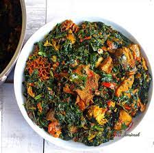
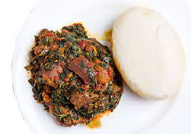

My Favourite Meal

Efo Riro
This rich vegetable soup is native to the Yoruba people of South-Western
Nigeria. The word, is derived from two Yoruba words, efo which means green
leafy vegetable and riro which means to stir. One can, therefore, deduce
from this synergy that efo riro is leafy vegetable that is stirred in rich
pepper stock.
Ingredients
The ingredients used to prepare ẹ̀fọ́ riro vary, especially in which meats
are included, but some common ingredients are:
| Ingredient |
Measurement |
| Efo |
2 bunches |
| Bell pepper ⁄ Tatashe |
2 medium size |
| Scotch bonnet ⁄ rodo |
2-3 |
| Palm Oil |
1 ⁄ 2 cup |
| Red onions |
2 medium size |
| Dry fish |
As you like |
| smoked fish |
As you like |
| Locust beans(Iru) |
1 tbsp |
| seasoning cubes (preferably Knorr) |
2 Knorr cubes |
| Ground crayfish |
3 tbsp |
| Salt |
To taste |
Directions
-
First, get your core ingredients ready. Efo Riro is a fast cooking dish,
so you’ll need to be proactive.
-
season the meats, add sliced onions and boil on medium heat. Remember to
boil the tougher meats first, then add the softer ones. Just before it’s
fully cooked, add the Stockfish, boil till tender and set aside.
-
Wash your vegetables thoroughly with hot water to rid it of all traces
of dirt, be careful not to in soak in hot water for too long so as to
retain the nutrients. Slice or chop according to your preference and set
aside.
-
Blend the scotch bonnets and bell peppers and an onion coarsely and set
aside
-
In a large pot, add the palm oil, leave to heat up on medium heat for 2
minutes
- Then add onions, fry till fragrant.
-
Then add the locust beans, fry to release the flavour for another minute
-
Add the blended pepper and two Knorr cubes, let that fry for 15-20
minutes thereabouts or until the pepper dries out and the size reduces
by almost half
-
Add a bit of the meat stock/ chicken stock, if you haven’t got stock,
just add water, be careful not to add too much. Just one cup should do.
Let it boil for 2-3 minutes to combine.
-
Add the assorted meats, prawns, crayfish, stockfish and catfish. Combine
and taste, adjust seasoning if required. Leave to cook for a further 10
minutes.
-
Add the washed vegetables, combine thoroughly Switch off the heat at
this time, leave to simmer for a further 5 minutes with the residual
heat and it’s ready.
Different ways you can have Efo riro
